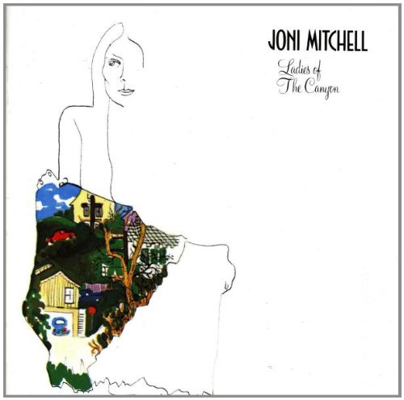
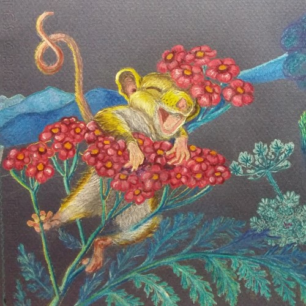
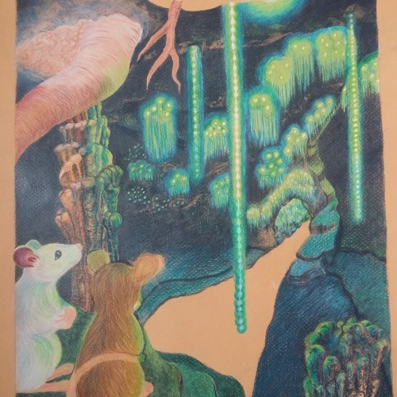

“We are just an advanced breed of monkeys on a minor planet of a very average star."
~Stephen Hawking~
"We are stardust.
We are golden."
~Joni Mitchell~
Some days I start to feel that I'm not good enough. I begin to fear that I might not make it. I begin to become quite anxious. And when I am anxious it is hard to focus, hard to learn something new, hard to get anything done.
When this happens, I stop what I am doing. I sit back and breathe. I close my eyes and focus inward. Sometimes breath and meditation are enough to clear away that state and bring me back to my center, to peace, to clarity. If not, I sometimes settle into the embrace of my "better angels" and bliss out for a while, or release the stress with a good cry--sometimes followed by a good laugh and maybe a song.
Other times I need a change of scenary for a while. So I ride my bicycle, feel the breeze, see the sky and the trees. I stop by my neighborhood coffeehouse and sit and sip and read. I listen to some pretty awesome music and look at the cool artwork on the walls. Maybe a stranger wants to chat for a bit. And I feel better. Less like a "rat in the race" so to speak.
But sometimes I just need to remember this:
(actually visualize this using your location as you are reading it)
"I am sitting here, in this room, in Oakdale, in Louisville, in Kentucky, in the USA, on Earth, in this galaxy, in a universe of many universes. That's the point that I smile and my anxiety drains. We are each taking up this tiny bit of space in an unimaginable amount of time and space--our time on earth just a blink in the scheme of things. I am no more or less valuable or worthy than the next guy, who is also just a blink, no more or less valuable or worthy than that bird sitting on the fence rail, or that worm she is eyeing, that yarrow plant or that Mimosa tree. My perspective, my ideas, my thoughts, are no more or less worthy than another's. Perhaps we differ from one another in our gifts, what inspires us, our reasons for being here. But we are each here and have as much right to our time and space on earth as the next. I don't pretend to know the truth of it all, but my favorite version of 'the way it is' is that we are briefly embodied in these bodies on earth and will soon move on to other adventures.
My anxiety vanishes. And I return to my work or play in peace and with new perspective and enthusiasm. Maybe I will succeed in accomplishing the intended goal. Maybe I will not. But my moments will be spent in the joy of creating or in just being.
I learned a long time ago that sometimes we embark on a journey for one reason and discover that that reason was meerly the impetus to begin. The reason or reasons for the journey reveal themselves along the way. Or perhaps the grandest ones only when it is over.
Related Material
subscript-1
subscrip-2

Under deconstruction.
Keep away from
the black hole !
Joni Mitchell
"We are stardust."
We are golden"
Searching For Grace
Coming in 2019
by Teresa Balistreri
click/tap image for preview'
